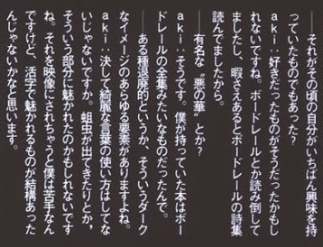
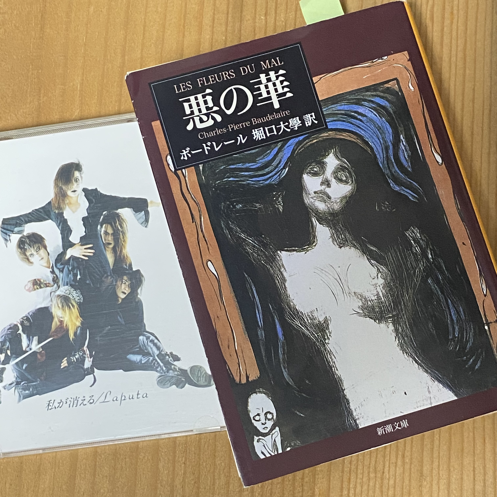
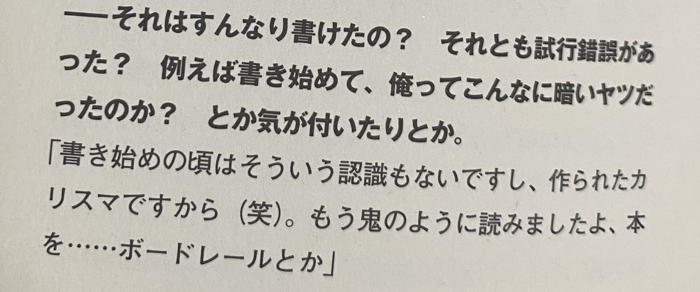
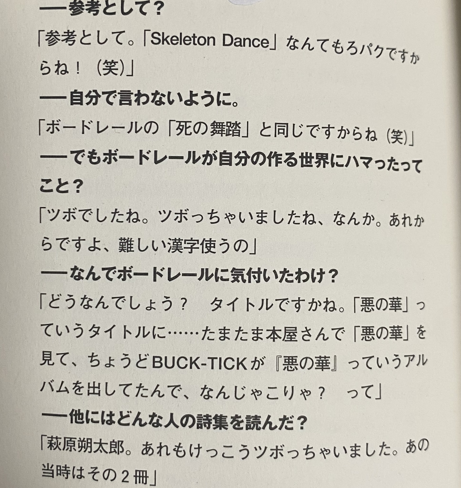

ボードレールを読んでいたら、「Skeleton Dance」に辿り着いた。
2026.10.10
akiとボードレール
akiさんについて調べ始めた頃、昔の雑誌のインタビューを読んでいると、たびたび「ボードレール」という名前が出てきました。 「そんなに影響を受けたなら、どんな詩を書く人なんだろう？」 そう思って、ボードレールの『悪の華』を読んでみることにしました。

私が購入したのは、堀口大學訳の新潮文庫版『悪の華』です。 こちらの新潮文庫の日本語版の『悪の華』は、昭和28年に初版が発行されており、akiさんが誕生する前から日本にすでに存在していました。

一から順番に読み進めていくと、「九七 死の舞踏」という詩に辿り着きました。
そして読んでみて、
「……これって『Skeleton Dance』じゃん。」
となりました。
『死の舞踏』には、死者、骸骨、舞踏、恐怖、嘔気、頭蓋、肋骨、格子、毒蛇、踊り手など、 『Skeleton Dance』と重なるイメージがいくつも登場していました。
そこで、実際に歌詞と並べてみました。
「死の舞踏」と『Skeleton Dance』
| 『Skeleton Dance』 | 堀口大學訳 『死の舞踏』 |
比較、考察 |
|---|---|---|
| 死を背負う人の群れ | 死を背負う家畜の群 | 「死を背負う＋群」という構造がかなり近い。 |
| 苦い嘔気を催す | 嘔気なしには眺めはしまい | 「嘔気」という漢字まで一致。「吐き気」ではなく「嘔気」なのが気になる。 |
| 恐怖の魅力の中 | 恐怖の魅力に酔い得るは…… | 印象的な言葉が重なる。 |
| 貴方の頭骸に似て | 頭蓋骨 | 「頭蓋／頭骸」の近さ。 |
| 目玉は毒蛇に喰われ | 貪婪な毒蛇が…… | 「毒蛇」が共通する。 |
| 肋骨が二本足りない／格子の隙 | 肋骨の歪んだ格子のすき間 | 「肋骨＋格子」というイメージが非常に近い。 |
| 又一人の踊り子が | 舞姫／踊り手 | 「踊る死者」というモチーフが対応する。 |
| 朱い月／千の哀しみ／餓鬼が乗り移る／枢を引き摺る音 | ― | aki独自の表現と思われる部分。 |
特に私が気になったのは、「吐き気」ではなく「嘔気」という漢字を使っていることでした。
もちろん、「恐怖の魅力」や「毒蛇」などはボードレールの原詩にもあるため、 堀口訳から直接取ったとは断定できません。それでも、これだけ多くの要素が一つの歌詞に重なっていると、 『Skeleton Dance』は『死の舞踏』をかなり参考にしているように思えました。
そして『COLORS』で答え合わせ
ここまでは、私自身がボードレールの『悪の華』を読んで見つけた発見でした。
ところが、その後、荒川れいこさんのインタビュー本『COLORS』を手に入れました。その中にはakiさんの記事があります。
そして『Skeleton Dance』についてのインタビューを読んで、思わず笑ってしまいました。


「参考として？」という質問に、akiさん本人が、
「『Skeleton Dance』なんてもろパクですからね！（笑）」
さらに、
「ボードレールの『死の舞踏』と同じですからね（笑）」
と答えていたのです！！
……本人が言ってたんかい。と思いました。
でも、歌詞を読んでみると
本人は「もろパク」と言っています。
確かに、ボードレールから受け取ったと思われる要素はかなり多い。
死、骸骨、舞踏、恐怖、嘔気、頭蓋、肋骨、格子、毒蛇、踊り手。
でも、その中には、
朱い月
千の哀しみ
餓鬼が乗り移る
肋骨が二本足りない
枢を引き摺る音
といった、akiさんのものと思われるイメージも入っているようでした。
そして「1・2・3」の部分は、「アン・ドゥ・トロワ」とフランス語で歌われています。 ボードレールの『悪の華』はもともとフランス語で書かれた詩集です。
つまり、ボードレールの『死の舞踏』をそのまま写したというより、 そこからakiさん自身が「ツボ」だと思ったものを選び、 自分の言葉や怪異的なイメージを加えて、一つの歌詞に作り変えたように感じます。
ボードレールから、akiの世界へ
『Skeleton Dance』には、確かに「ボードレールの『死の舞踏』から借りた」と思われる部分があります。
でも、それだけではこの歌詞にはならないと考えます。
「死の舞踏」から受け取った世界に、akiさんの世界観を重ねて作られた作品。
私には、そんなふうに見えました。
本人は笑って「もろパク」と言っていましたが、実際に読み比べてみると、 そこにはちゃんとakiさんの独自の『Skeleton Dance』があるように感じます。
そして何より面白かったのは、 私が先にボードレールを読んで「似ている」と気づき、 その後で本人の「もろパク」という発言を知ったことです。
調べていくと、こうした偶然の答え合わせに出会えるのも、 過去の作品を掘り返す楽しさなのかもしれません。
出典・参考資料
- 出典1： 『Fool's Mate』No.195、1998年1月号、p.178 — akiさんのボードレールについての発言。
- 出典2： ボードレール『悪の華』 堀口大學訳、新潮文庫。 「九七 死の舞踏」を参照。 Amazonで『悪の華』を見る
- 出典3： 荒川れいこ『COLORS』、角川書店、1999年3月、p.86 — 『Skeleton Dance』とボードレール「死の舞踏」についてのakiさんの発言。
Last Update : 2026.10.10